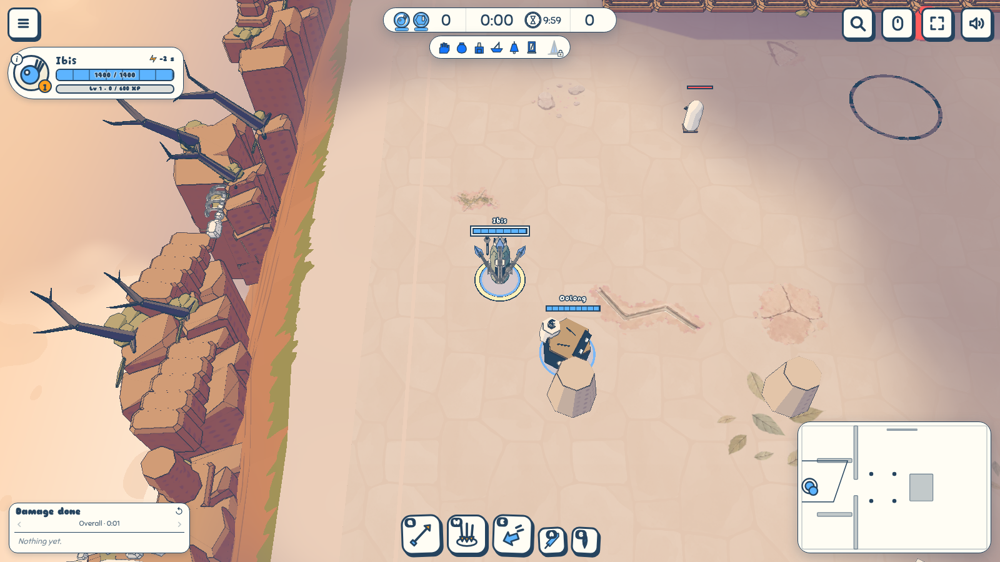
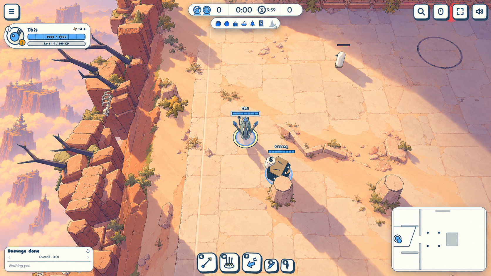
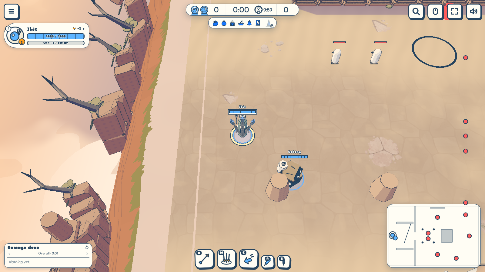
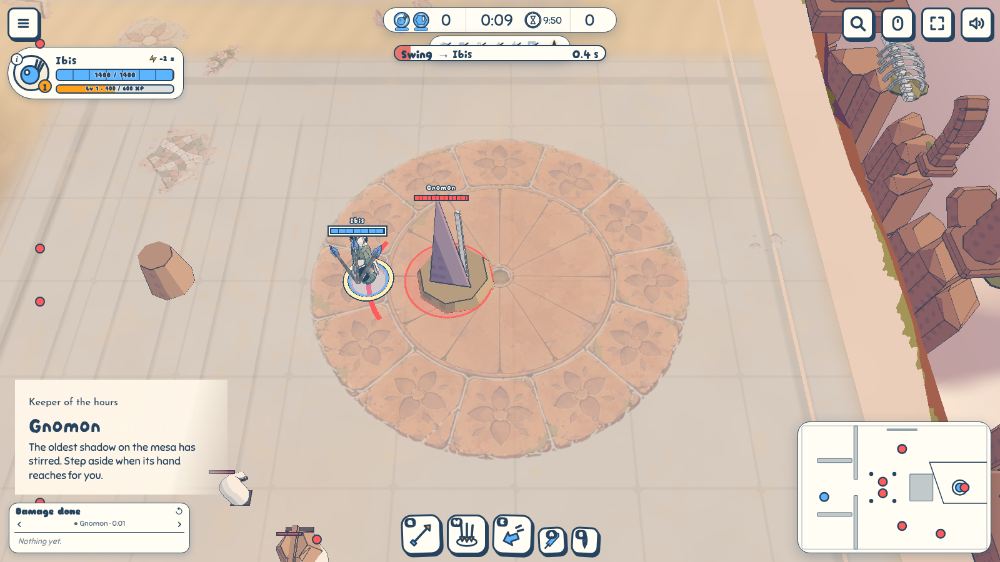
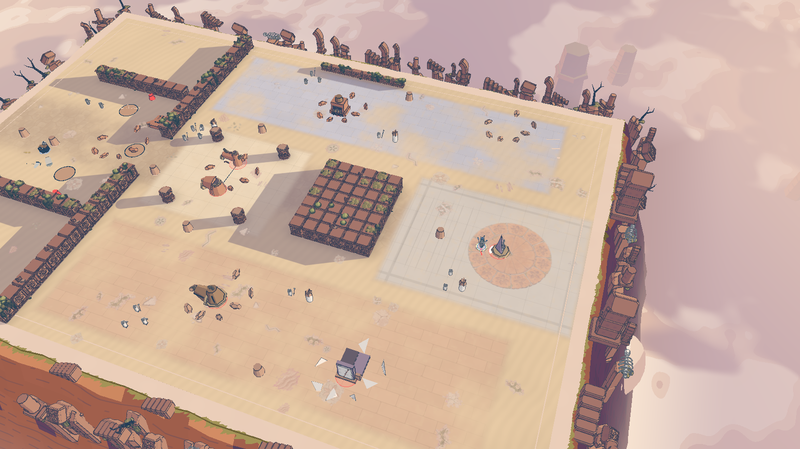
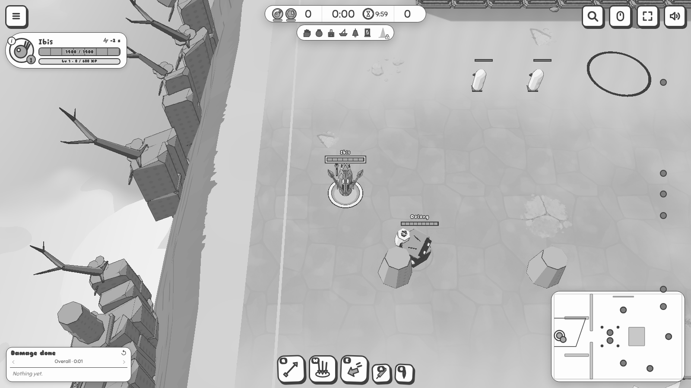

Altamesa from gate to dusk
To review · 2026-10-31 · thr_eskwtf9y6g
Worn paving gives way to windblown sand. The shade wing lies cool, the sun wing holds the heat, and each fallen Warden brings the long shadows of Gnomon’s court closer.
The gate comparison uses the match camera. The dusk views stage all six earlier victories to inspect the last court; they are lighting proofs, not a completed player run. The widest dusk frame draws 202,662 triangles, below the 300,000 budget, with no browser errors. The test suite passed with 271 tests and one skip.





